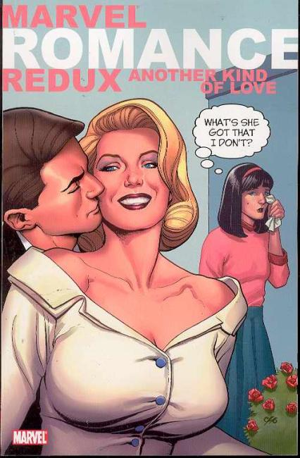

Marvel Romance Redux

Series: one-shot comedy 2007
Publisher: Marvel
Written by Jeff Parker, John Lustig, Keith Giffen, Jimmy Palmiotti, John Lustig, Roger Landridge, Kyle Baker, Fred Van Lente, Michael Leib, Robert Fleming, Kirsten Sinclair, Peter David, Joe Lansdale, and Paul Di Filippo
Illustrations by John Buscema, Don Heck, John Romita, Jack Kirby, Gene Colon, Dick Giordano, Sol Brodsky, and Vinnie Colletta
Cover by Frank Cho
Continuing the noble pursuit of taking funny old pictures and putting funny words on top of them! We've asked some of the funniest writers in comics today to look at the romance comics of yesteryear and put in some new dialogue that'll make us laugh! Unfortunately, the funniest writers were busy, so we had to settle on these guys. Hey, you get what you pay for!
Collects Marvel Romance Redux:
- But I Though He Loved Me (2006),
- I Should Have Been a Blonde (2006),
- Love is a Four Letter Word (2006) ,
- Restraining Orders are for Other Girls (2006),
- Guys and Doll (2006).